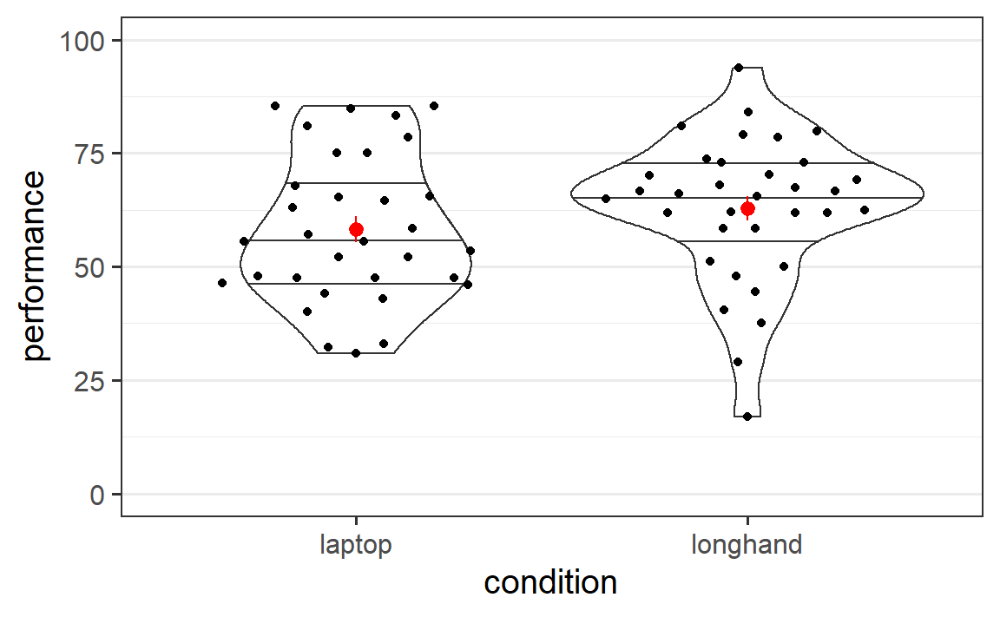

Chapter 3 Case Study 1: More Results from Note Taking Studies
In this chapter we will apply what we have learned in the previous chapter - how to analyse experimental data with one experimental manipulation and two conditions. For this, we will again take a look at the data from Urry et al. (2021). Additionally, we will analyse the data of the experiment by Mueller and Oppenheimer (2014). This experiment was the first published experiment investigating the question of note taking with a laptop or in longhand format and was the basis on which Urry et al. (2021) planned their study. For the study of Mueller and Oppenheimer (2014) we will perform a full analysis starting with reading in the data. So in addition to performing the statistical hypothesis test, we will calculate some descriptive statistics.
We start the analysis in this chapter in the same way as in the previous chapter, by loading the three packages we generally use, afex, emmeans, and tidyverse, and set a nicer ggplot2 theme. Before doing so it is probably a good idea to restart R (unless, of course, you are just starting R). In RStudio this can be conveniently done through the menu by clicking on Session and then Restart R. In other R environments you might need to restart the program. The benefit of restarting R is that it should create a blank R session in which no packages are loaded and no objects exist in the workspace. Only such a blank sessions ensures that, once we have obtained a set of results, we can recreate them later using the same code. That is, a blank R session avoids any potential problems due to analyses performed in a previous session that are still lingering. Restarting R should generally be done when starting a new analysis or after one is completely done with an analysis. In the latter case, it makes sense to restart R and the rerun all code one has saved in ones script to ensure that all results replicate based on only the code in the script (and do not require some additional code not saved).
library("afex")
library("emmeans")
library("tidyverse")
theme_set(theme_bw(base_size = 15) +
theme(legend.position="bottom",
panel.grid.major.x = element_blank()))3.1 Conceptual Memory Data from Urry et al. (2021)
As a quick reminder, Urry et al. (2021) showed their participants short lectures (TED talks) on video during which participants were allowed to take notes. One group of participants, the laptop condition, could take notes on a laptop, whereas the participants in the longhand condition could take notes with pen and paper. After the lecture participants were quizzed on two aspects of the content of the lecture, factual questions and conceptual questions. In the previous chapter we have analysed the overall memory score which was the average of the performance for the factual questions and the conceptual questions. Here, we are only concerned with the memory performance for conceptual questions. We begin our analysis by loading in the data (which is part of afex can be loaded with data()) and getting an overview of the variables using str():
data("laptop_urry")
str(laptop_urry)
#> 'data.frame': 142 obs. of 6 variables:
#> $ pid : Factor w/ 142 levels "1","2","4","5",..: 1 2 3 4 5 6 7 8 9 10 ...
#> $ condition : Factor w/ 2 levels "laptop","longhand": 1 2 2 1 2 2 1 2 2 1 ...
#> $ talk : Factor w/ 5 levels "algorithms","ideas",..: 4 4 2 5 1 3 5 2 5 4 ...
#> $ overall : num 65.8 75.8 50 89 75.6 ...
#> $ factual : num 61.7 68.3 33.3 85.7 69.2 ...
#> $ conceptual: num 70 83.3 66.7 92.3 82.1 ...As before, we have the participants identifier variable in pid and the note taking condition in variable condition. We can also guess that the conceptual memory scores are in the aptly name variable conceptual (if we were unsure about this, we could also check the documentation of the data at ?laptop_urry).
Usually, once the data is sufficiently prepared (i.e., we have performed some sanity checks and identified DV and IV), the first step in an analysis should be plotting the data. This could be done using ggplot2 directly. However, in cases such as the present one where it is very clear which statistical model we are going to estimate it is often a bit less effort to plot the data with afex_plot(). Thus, we start by estimating the statistical model for the conceptual memory performance of the data from Urry et al. (2021) and save the estimated model object as mc_urry. For this, we again use aov_car() on the laptopt_urry data and specify the model using the formula interface. The DV we are considering here is conceptual, our IV is condition, and the participant identifier is pid. Consequently, the formula is conceptual ~ condition + Error(pid). Then, before looking at the inferential statistical results, we use this model object to plot the data using afex_plot.
mc_urry <- aov_car(conceptual ~ condition + Error(pid), laptop_urry)
#> Contrasts set to contr.sum for the following variables: condition
afex_plot(mc_urry, "condition")Figure 3.1: Conceptual memory scores from Urry et al. (2021) across note taking conditions
The goal behind beginning with plotting the data is that it allows to see whether the data “looks alright.” That is, we check whether there are any features that stand out such as clear outliers or an unusual pattern in the data. If this were the case, we would try to figure out if we can find a reason for this issue or how we deal with it. But, as the data looks alright, we continue and consider the results of the significance test:
mc_urry
#> Anova Table (Type 3 tests)
#>
#> Response: conceptual
#> Effect df MSE F ges p.value
#> 1 condition 1, 140 441.76 1.00 .007 .319
#> ---
#> Signif. codes: 0 '***' 0.001 '**' 0.01 '*' 0.05 '+' 0.1 ' ' 1The ANOVA table reveals that the significance test for the effect of condition is not significant with \(p = .319\). Thus, in line with the finding that there is no evidence for a difference in overall memory performance, there also is no evidence for a difference in memory for conceptual information.
We can also again use emmeans to see the condition means (or estimated marginal means). In line with Figure 3.1 (as afex_plot internally also uses emmeans it shows exactly the same means in graphical form), the memory score in the laptop condition is descriptively around 3.5 points higher than the score in the longhand condition.
emmeans(mc_urry, "condition")
#> condition emmean SE df lower.CL upper.CL
#> laptop 73.5 2.55 140 68.5 78.6
#> longhand 70.0 2.44 140 65.2 74.8
#>
#> Confidence level used: 0.95Before moving to the next data set, let us consider how we could report this analysis in a research report. We could for example write:
As shown in Figure 3.1, participants’ conceptual memory scores (on a scale from 0 to 100) are descriptively slightly larger in the laptop condition compared to the longhand condition. We analysed these scores with an ANOVA with one factor, note taking condition, with two levels (laptop vs. longhand). The effect of note taking condition was not significant, \(F(1, 140) = 1.00\), \(p = .319\). This indicates that the data does not provide evidence for a difference in memory for conceptual information based on how notes are taken during lectures.
3.2 Why are Experiments Replicated?
The study by Urry et al. (2021) was not the first study investigating the effect of note taking during lectures on memory. In contrast, their study was a replication of Study 1 by Mueller and Oppenheimer (2014). A replication is the act of rerunning an existing study to see if one can obtain (or replicate) the results of the previous study.
As we have discussed before, inferences from NHST are never conclusive as they are probabilistic and require multiple inferential steps. Replications are one of the most important tools in science for overcoming at least the probabilistic uncertainties associated with the inferences we draw from experimental data. For example consider that several independent but otherwise as similar as possible experiments – that is, replications of the same experiment – all obtain a significant result (i.e., indicate that the data are incompatible with the null hypothesis). Such a pattern would dramatically increase our confidence that the null hypothesis is likely false.
In addition to the gain in confidence for specific results, there are good practical reasons for replicating an existing experiment. For example, when beginning to work on a new topic it is generally a good idea to replicate the experiment on which one wants to build on. If one already has problems replicating what exists that shows that the topic is maybe not as simple as portrayed in the literature.
Another excellent reason for performing a replication is if one simply does not believe an existing result. Remember, one of the key components of the scientific method is scepticism (at least according to Wikipedia). And if a results is difficult to believe, the reasonable sceptical position to take is to require more evidence. A replication is one way (if not the best way) to produce such evidence. Not believing existing experiments also does not imply that one questions the integrity of the researchers who did the experiment. There are many completely harmless reasons why a study might not replicate. For example, researchers might have just obtained a significant results by chance (which happens in 5% of cases, as discussed in the next chapters).
Sadly, replicating existing experiments and publishing the results, is still not the norm in psychology and related disciplines. Quite to the contrary, the situation is so dire that many fields are currently considered to be in a “replication crisis.” For example, a large scale effort to replicate 100 studies in psychology (Open Science Collaboration 2015) showed that less than 50% could be replicated successfully. Similarly sobering results have since been observed across the social sciences (Camerer et al. 2018, 2016; Klein et al. 2018). Much has been written about this problem and this is not the right place to rehash all arguments. The best summary of the situation is the book by Chris Chambers (Chambers 2017). The important thing is to realise that science is a cumulative endeavour. Every new experiment builds on existing research. If the existing research has never been replicated, our confidence in this research has to be somewhat low. This questions the foundations of any new work that builds up on this non-replicated research. To move forward every researcher needs to try to do better and rebuild our science on solid (i.e., replicable) grounds.
3.3 Conceptual Memory Data from Mueller and Oppenheimer (2014)
library("afex")
library("emmeans")
library("tidyverse")
theme_set(theme_bw(base_size = 15) +
theme(legend.position="bottom",
panel.grid.major.x = element_blank()))mo2014 <- read_csv("data/Study 1 abbreviated data.csv")
glimpse(mo2014)
#> Rows: 66
#> Columns: 22
#> $ participant <dbl> 1, 2, 3, 4, 5, 6, 7, 8, 9, 10, 11, 12, 13, 14~
#> $ LapLong <dbl> 1, 1, 1, 0, 0, 0, 0, 0, 1, 1, 1, 1, 0, 0, 0, ~
#> $ whichtalk <dbl> 3, 1, 1, 1, 3, 3, 4, 4, 4, 4, 2, 2, 5, 5, 5, ~
#> $ threeGR <dbl> 0.120622568, 0.064676617, 0.080459770, 0.1371~
#> $ Wcount <dbl> 225, 213, 244, 420, 461, 572, 447, 334, 157, ~
#> $ factualindex <dbl> 3.000000, 3.666667, 6.500000, 5.166666, 4.000~
#> $ conceptualindex <dbl> 2.0, 1.5, 2.0, 2.5, 4.0, 2.5, 2.0, 3.0, 2.0, ~
#> $ factualraw <dbl> 4, 7, 12, 9, 5, 3, 6, 11, 4, 8, 3, 8, 2, 7, 3~
#> $ conceptualraw <dbl> 3, 3, 4, 5, 6, 4, 2, 5, 3, 0, 1, 5, 2, 3, 3, ~
#> $ perfectfactindexscore <dbl> 6, 7, 7, 7, 6, 6, 6, 6, 6, 6, 5, 5, 7, 7, 7, ~
#> $ perfectconceptindexscore <dbl> 4, 3, 3, 3, 4, 4, 4, 4, 4, 4, 5, 5, 3, 3, 3, ~
#> $ perfectfactsscore <dbl> 7, 14, 14, 14, 7, 7, 12, 12, 12, 12, 14, 14, ~
#> $ perfectconceptscore <dbl> 6, 6, 6, 6, 6, 6, 7, 7, 7, 7, 6, 6, 6, 6, 6, ~
#> $ `filter_$` <dbl> 1, 1, 1, 1, 1, 1, 1, 1, 1, 1, 1, 1, 1, 1, 1, ~
#> $ ZFindexA <dbl> -0.42873690, 0.06493715, 2.16305172, 1.175703~
#> $ ZCindexA <dbl> -0.3656277, -0.8506441, -0.3656277, 0.1193886~
#> $ ZFrawA <dbl> -7.733892e-01, 3.866946e-01, 2.320168e+00, 1.~
#> $ ZCrawA <dbl> -0.74071030, -0.74071030, -0.02211076, 0.6964~
#> $ ZFindexW <dbl> -0.40461719, -0.12026966, 2.08159066, 1.04542~
#> $ ZCindexW <dbl> -1.04443576, -0.93891169, -0.06259411, 0.8137~
#> $ ZFrawW <dbl> -0.2672612, -0.1884652, 1.6961867, 0.5653956,~
#> $ ZCrawW <dbl> -1.5236235, -0.9013878, 0.0000000, 0.9013878,~mo2014 <- mo2014 %>%
mutate(
pid = factor(participant),
condition = factor(LapLong,
levels = c(0, 1),
labels = c("laptop", "longhand")),
performance = (factualindex/perfectfactindexscore +
conceptualindex/perfectconceptindexscore)/2 * 100
) %>%
select(pid, condition, performance)ggplot(mo2014, aes(x = condition, y = performance)) +
geom_violin(draw_quantiles = c(0.25, 0.5, 0.75)) +
ggbeeswarm::geom_quasirandom() +
stat_summary(colour = "red") +
coord_cartesian(ylim = c(0, 100))
#> No summary function supplied, defaulting to `mean_se()`
res2 <- aov_car(performance ~ condition + Error(pid), mo2014)
#> Contrasts set to contr.sum for the following variables: condition